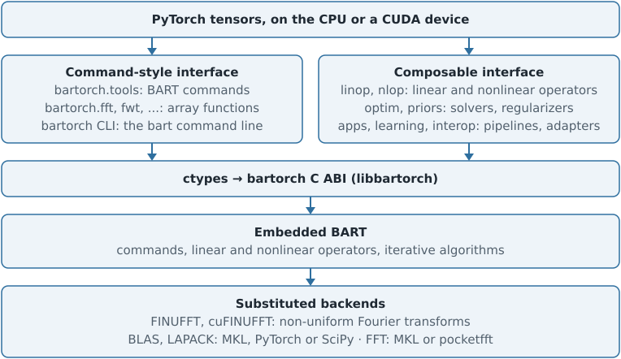
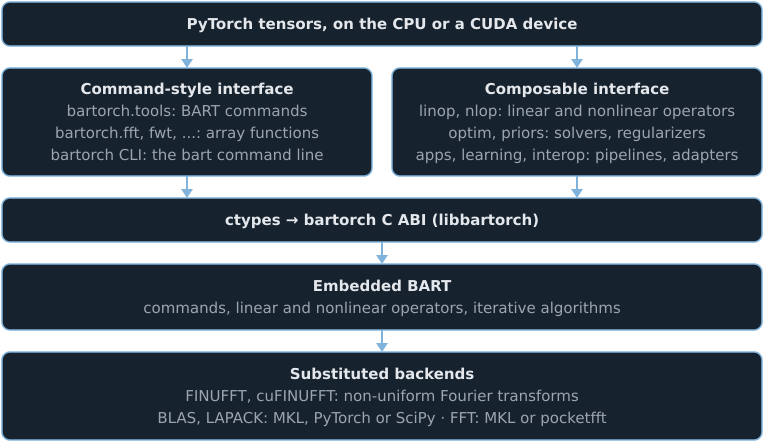

Interfaces and execution#
TL;DR
bartorch drives one embedded BART through three layers: reconstruction pipelines (
bartorch.apps), the objects the pipelines are assembled from — operators, regularization terms and solvers (bartorch.linop,bartorch.nlop,bartorch.priors,bartorch.optim) — and BART’s remaining commands, with the corrections and motion estimation around a reconstruction, as functions of tensors (bartorch.tools).An app runs a standard reconstruction in one call; the objects are needed for an encoding BART has no application for, a solver inside an outer loop, or gradients.
bartorch.apps.pics()returns the tensor BART’spicsreturns on a Cartesian grid and agrees with it to floating-point round-off along a trajectory;bartorch.apps.moba()andbartorch.apps.mobafit()fit BlochSim signal models and return named maps in physical units.Operators pass tensors to BART without copying and commands copy their inputs by default; an error inside BART raises
BartError, and FINUFFT or cuFINUFFT computes every non-uniform Fourier transform.
A reconstruction needs as much control over BART as its method requires: a
standard SENSE or compressed-sensing reconstruction is one call, an encoding
with an additional factor needs the encoding operator itself, and a learned
reconstruction needs gradients through the solver. bartorch therefore exposes
BART at three levels. A pipeline in bartorch.apps
performs one of BART’s reconstructions — pics, moba, mobafit,
POCSENSE — in one call. The composable interface exposes the objects those
pipelines are assembled from: the encoding operator, the regularization terms
and the iterative algorithm. The functions of bartorch.tools call the
BART commands that have no counterpart among those objects — calibration,
trajectories, simulation, registration — as functions of tensors, and hold
the corrections and the rigid motion estimation applied outside the
reconstruction, which have no BART command. All three call the same embedded
BART through one C interface.




The interfaces#
Interface |
Unit |
Autograd |
Runs as |
|---|---|---|---|
|
One reconstruction |
As its solver |
Operators and solvers of the composable interface |
|
One BART command, or one correction |
Not for a BART command |
The command, in this process; a correction in PyTorch, SimpleITK or PyHySCO |
|
One array operation |
No |
A BART command |
|
A |
No |
An app where one exists, otherwise the command |
|
An operator and its adjoint or derivative |
Yes |
A BART operator, or Python callbacks |
|
A solver or one iteration step, and its terms |
Yes, per solver |
BART’s iteration: CG in the library, proximal steps in Python over BART’s operators |
|
Adapters to networks and to DeepInverse |
Yes |
PyTorch around the composable interface |
An app runs a standard reconstruction in one call. The composable interface is needed when the encoding has no BART application — an additional factor in the forward model, a subspace with an off-resonance correction, an operator defined in Python — when a solver is called from an outer loop such as Gauss-Newton, or when gradients are required.
Apps and BART’s commands#
bartorch.apps.pics() performs the steps of BART’s pics with this
package’s objects: the sampling pattern, the modulation into BART’s uncentred
convention and the data scaling in Python, then an encoding from
bartorch.linop under a solver from bartorch.optim. On a
Cartesian grid it returns the tensor the command returns; along a trajectory
the two agree to floating-point round-off, because FINUFFT accumulates over
threads in an order that varies between runs. The command itself is not
public; the test suite holds the app to it. An app is the starting point for
a variant of an application: its steps are Python that can be read and
changed. bartorch.apps.moba() and bartorch.apps.mobafit() use
BART’s Gauss-Newton method but not its signal models: they fit BlochSim
models, which carry bounds and a starting state, and return named maps in
physical units rather than BART’s scaled coefficients.
The bartorch command line reads a bart command line. Where an app exists
for the command and expresses every option given, the app runs; otherwise the
command itself runs. bartorch.cli.route() reports which. Both routes
write the files the command writes; for mobafit and moba the app route
converts the named maps into BART’s coefficients and agrees with the command
to the accuracy of the fit rather than bit for bit.
Implementation layers#
Layer |
Role |
|---|---|
Python and ctypes |
A tensor crosses as its data pointer and its shape reversed into a BART dimension vector; a C-order tensor and a BART array of the reversed dimensions are the same memory, so operators copy nothing. Commands work on copies of their inputs by default, because some BART commands write into their inputs. |
bartorch C ABI ( |
Runs commands and operators under BART’s error handler, so an error or a failed assertion inside BART raises |
Embedded BART |
The commands, the linear and nonlinear operators and the iterative algorithms, compiled from the pinned revision of the downstream fork |
Encoding executor |
bartorch’s implementation of the MRI encoding operators: SENSE over an FFT, a NUFFT or a wave transform, applied to a slab of coils at a time and built from BART’s operators; described in The MRI encoding operator. |
Substitutions and backends |
Components compiled in place of BART’s, and the libraries they call: FINUFFT and cuFINUFFT for every non-uniform Fourier transform and point spread function (Non-Cartesian sampling); MKL’s DFTI or the compiled pocketfft for the FFT; BLAS and LAPACK routines from MKL, from PyTorch’s linked library, or from SciPy. |
On a CUDA device, operators and solvers work on device memory directly; BART uses cuFFT and cuBLAS, cuFINUFFT computes non-uniform transforms, and BART’s work is ordered against PyTorch’s current stream. Some commands allocate host temporaries internally, and are given host copies of their inputs; their results are returned on the device.
The OpenMP runtime#
BART and FINUFFT are compiled with OpenMP and share one runtime with PyTorch.
The library is linked against the runtime PyTorch contains
(torch/lib/libgomp.so.1, torch/lib/libomp.dylib,
torch/lib/libiomp5md.dll), and the wheels contain none of their own: on
macOS and Windows the LLVM runtime terminates the process when a second copy
initializes (OMP: Error #15). No installed file is modified, and
KMP_DUPLICATE_LIB_OK is not used. On Linux this requires PyTorch 2.7.1 or
later, the first release whose copy is named libgomp.so.1.
Numerical correspondence with BART#
Outside the substitutions, bartorch runs BART’s code. A substitution changes
a result only within the accuracy of the substituted computation: for the
non-uniform FFT that is the tolerance it is planned with, \(10^{-3}\) by default.
The iterations of bartorch.optim reproduce BART’s step sizes, penalty
updates and stopping rules; for the Cartesian configurations the test suite
covers, the assembled solvers return the same tensors as pics, bit for bit.
bartorch.apps.moba() and bartorch.apps.mobafit() fit BlochSim
signal models and do not reproduce their commands. Where a configuration cannot be
served — a non-Cartesian transform FINUFFT cannot compute, a term an iteration
cannot apply — the call raises an error with the reason rather than computing
the result by another method.